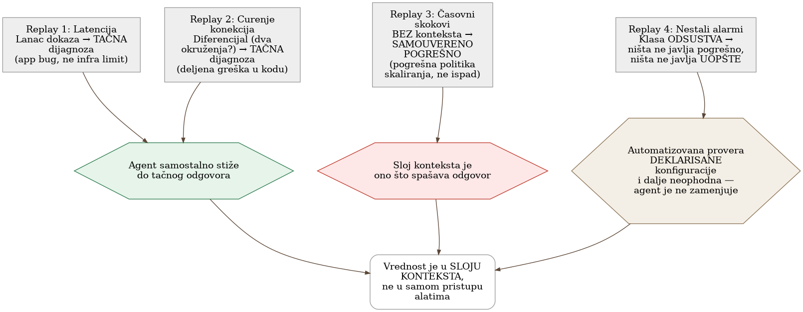
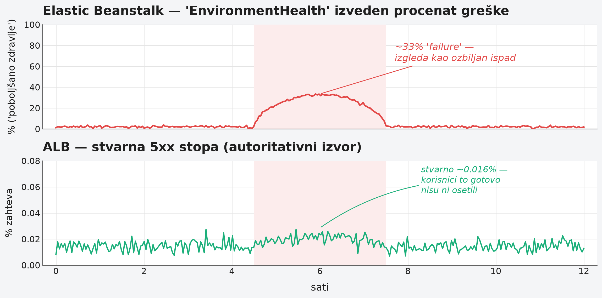

Poglavlje 28 — AI-asistirana observability: agent koji čita telemetriju
Zamenski lekar koji pokriva vikend smenu za redovnog porodičnog doktora je, često, odličan lekar — možda i bolje obrazovan, sigurnije u opštoj dijagnostici, ažurniji sa najnovijim smernicama. Ali on ne zna da pacijent iz sobe tri uvek ima blago povišen pritisak kad je nervozan, što redovni doktor zna napamet i ne shvata ozbiljno. Ne zna da druga pacijentkinja ima retku alergiju koja nije upisana u sistem na uobičajenom mestu, nego u napomeni koju je neko davno dodao rukom. Zamenski lekar radi tačno ono što bi svaki dobar lekar uradio: prati simptome, naručuje standardne analize, donosi zaključak koji je, na papiru, savršeno razuman. Problem nije u njegovom znanju medicine. Problem je što dobra dijagnoza za ovog pacijenta, u ovoj bolnici, zavisi od mnogo toga što nikad nije upisano u udžbenik — a stoji zapisano, ako uopšte stoji, u napomenama koje samo redovni doktor čita.
28.1 Pitanje na koje ovo poglavlje odgovara
Alat koji AI agentu daje pristup metrikama, logovima i trejsovima obećava da ubrza triažu alarma. Da li to obećanje drži na stvarnim, prošlim incidentima — i, podjednako važno, gde tačno takav agent samouvereno pogreši, i zašto je teže agentu nego čoveku da primeti kad nešto nedostaje umesto da nešto javlja pogrešno?
28.2 Kako je to urađeno — praktičan pregled
Metod: ponovno odigravanje stvarnih incidenata, ne hipoteza
Umesto da poveruje na reč obećanju "agent može da trijažira alarme," implementacija je sprovela proveru na četiri stvarna, već rešena incidenta iz sopstvene istorije — puštajući agenta da nezavisno prođe kroz iste tragove koje je čovek prošao, sa istim alatima za upit metrika, logova i trejsova, i porediti agentov zaključak sa poznatim, već potvrđenim odgovorom. Ovo je "replay" metod — jer je odgovor unapred poznat, moguće je tačno izmeriti gde se agentovo rezonovanje poklapa sa ljudskim, a gde skreće.
Prvi replay: tačna dijagnoza kroz lanac dokaza
U prvom incidentu (servis je povremeno vraćao grešku posle otprilike pet minuta čekanja), agent je samostalno sastavio lanac dokaza koji vodi ka tačnom uzroku: prepoznao je da vremenska vrednost kašnjenja, ponovljena tačno na istoj granici, nije slučajnost nego potpis mrežnog uređaja koji prekida neaktivnu konekciju posle fiksnog vremena — različito od haotične raspodele kašnjenja koju bi izazvao pad same aplikacije. Zatim je ispravno preusmerio pažnju sa "gde je vreme potrošeno" na "gde je vreme izgubljeno" — otkrivši da je stvarni upit prema bazi trajao svega delić ukupnog vremena, što je isključilo očiglednu, ali pogrešnu hipotezu ("težak upit") i ukazalo na to da servis čuva ceo odgovor u memoriji pre nego što počne da ga šalje, umesto da ga šalje postepeno. Agent je sistematski proverio i odbacio osam alternativnih infrastrukturnih hipoteza, svaku jednim jedinim upitom — tačno posao za koji je agent najkorisniji, jer je mehanički i ponavljajući.
Drugi replay: diferencijal koji imenuje uzrok
U drugom incidentu, ključno pitanje koje je razrešilo dijagnozu nije bilo "šta je pokvareno" nego "da li se ovo dešava u jednom okruženju ili u oba." Agent je ispravno prepoznao da istovremena degradacija u dva nezavisna okruženja ukazuje na deljenu grešku u kodu, ne na infrastrukturni problem specifičan za jedno okruženje — i, još važnije, uspeo je da isključi najočigledniju sumnju (rastuće opterećenje baze podataka) tako što je uporedio incidentni prozor sa istim vremenskim prozorom tokom prethodnih dana i otkrio da je taj nivo opterećenja bio sasvim uobičajen, treći po veličini u nedelji, a da veći, uobičajeniji skokovi nikad nisu izazivali greške. Ispravan odgovor je zahtevao tri odvojene komparacije — kroz okruženja, kroz dane, kroz podsisteme — svaka jeftina pojedinačno, ali zajedno dovoljno mukotrpna da je prvo ljudsko čitanje ovog incidenta bilo pogrešno i moralo je da se ispravi sledećeg dana.
Treći replay: gde naivan agent samouvereno greši
Treći incident je najvredniji upravo zato što pokazuje granicu. Alarm je tvrdio da trećina zahteva vraća grešku — zvuči kao ozbiljan ispad, i to je bio prvobitni, pogrešan zaključak čak i ljudskog tima, ispravljen tek sledećeg dana. Agent bez dodatnog konteksta bi stao na istom pogrešnom mestu: platforma za orkestraciju izveštava procenat grešaka izveden iz sopstvene interne provere zdravlja instance, ne iz stvarnog broja grešaka na granici sistema. Tek provera autoritativnog brojača — stvarnih grešaka na uređaju za balansiranje saobraćaja — pokazuje da je stvarna stopa grešaka bila hiljadu puta manja od tvrđene, i da nijedan stvaran zahtev korisnika nikad nije video grešku. Prava priča je bila potpuno drugačija: politika automatskog skaliranja je bila pogrešno oblikovana za ovaj tip opterećenja, dodajući instance sporo i gaseći ih prerano, u petlji koja se ponavljala svakog sata bez ikad stvarno rešivši problem koji ju je pokrenula. Bez dodatnog konteksta o kojem brojaču verovati, agent bi proizveo samouveren, spreman-za-alarmiranje, ali pogrešan zaključak.
Četvrti replay: klasa odsustva
Četvrti incident pripada potpuno drugoj klasi kvara — ništa nije javilo pogrešno; ništa nije javilo uopšte. Otkriven je slučajno, kad je čovek primetio neslaganje na dashboard-u, ne kroz bilo koji alarm. Istraga je otkrila šest odvojenih propusta istog oblika, uvedenih tokom nekoliko nedelja: linkovi u alarmima koji vode na servis koji više ne postoji pod tim imenom, telemetrija jedne porodice zadataka koja se, zbog kopiranog podešavanja, prijavljuje pod imenom potpuno druge porodice, i zadaci čiji su padovi bili sistematski potiskivani danima. Implementacija je izvukla otrežnjujući zaključak o podeli rada: agent je koristan za proveru posmatrane stvarnosti (da li telemetrija stvarno postoji tamo gde bi trebalo, da li se dva izvora slažu) — ali automatizovana, kodom pisana provera deklarisane konfiguracije ostaje neophodna, jer takva provera ne zahteva pristup platformi za telemetriju i ne može biti zavarana artefaktom uskog vremenskog prozora upita. Agent ne zamenjuje tu proveru; dopunjuje je.
Sloj konteksta kao stvarna imovina
Zajednička nit sva četiri replay-a: agent sa generičkim znanjem observability-ja dolazi dovde, ali tačno na mestima gde je potreban specifičan uvid u ovaj konkretan sistem — koji brojač je autoritativan, koja metrika laže po konstrukciji, koji naizgled bezazlen upit vraća nulu umesto greške kad nešto nije u redu — generičko znanje prestaje da bude dovoljno. Implementacija je zato izgradila mali, pažljivo održavan dokument specifičnih zamki ("sloj konteksta"), učitan agentu tačno u trenutku kad se sprema da upita platformu za telemetriju, ne pri svakoj sesiji unapred. Odluka da se ovaj dokument drži kao nešto što se učitava po potrebi, a ne kao stalno prisutan, ogroman fajl koji opterećuje svaku nevezanu sesiju, pokazala se ključnom za to da dokument ostane koristan umesto zaboravljen.


28.3 Analitički deo — potvrda spolja, i jedna otrežnjujuća granica
Protokol za povezivanje agenata na telemetriju je nov, ali već standardizovan
Otvoren protokol koji standardizuje kako AI agenti pristupaju spoljnim alatima i podacima postoji tačno za ovu svrhu — opisan od strane samog tvorca kao univerzalan konektor koji izbegava potrebu za posebnom integracijom za svaki alat. Svaki veći dobavljač platforme za telemetriju je od tada isporučio sopstveni server po ovom protokolu, sa dosledno sličnim dizajnerskim izborom: podrazumevano samo-za-čitanje, sa eksplicitnim zastavicama potrebnim da se dozvoli pisanje.
Zvanična preporuka nezavisno potvrđuje disciplinu ograničavanja upita
Nezavisan izvor sa iste industrije formuliše filozofiju koja se gotovo doslovno poklapa sa onim što implementacija radi: agent treba da upita platformu za telemetriju onako kako bi to radio iskusan inženjer — sa apsolutnom preciznošću, testirajući konkretne hipoteze, unutar strogih ograničenja, ne "izlivajući" ogromnu količinu sirovih podataka u kontekst agenta. Isti izvor eksplicitno preporučuje obavezan korak otkrivanja pre upita (koje metrike uopšte postoje, sa kojim oznakama) i proveru kardinalnosti pre izvršenja upita koji bi mogao biti preskup — mehanizmi koji sprečavaju tačno onu vrstu greške koja bi inače prošla neopaženo dok se račun ili kontekst agenta ne preplavi.
Poznata, imenovana zamka: upit koji uspe, ali laže
Nezavisna analiza rizika ove klase alata imenuje tačno zamku koju je implementacija otkrila u trećem replay-u: greška nije pad ili poruka o grešci — to je upit koji uspe i vrati verodostojno izgledajući, ali pogrešan odgovor, zato što je pogrešan pojam (pogrešno ime servisa, pogrešan brojač) tiho ušao negde ranije u lanac rezonovanja. Ovo potvrđuje da četvrti replay implementacije nije izuzetak nego dobro poznat, imenovan obrazac greške specifičan za agente koji rade više koraka rezonovanja zaredom.
Sloj konteksta kao razlikovni faktor je nezavisno potvrđen izvan ove implementacije
Nezavisna analiza sa iste teme formuliše skoro identičan zaključak do koga je implementacija stigla sopstvenim iskustvom: sirov pristup alatima — ono što protokol standardizuje — je neophodan, ali nije dovoljan. Bez organizacionog znanja (ko je vlasnik kog servisa, koje su zavisnosti, koje metrike su poznato zavaravajuće), agent nagađa umesto da zna — a razlika između agenta koji nagađa i agenta koji zna je, po istoj analizi, razlika između demonstracije i sistema koji se stvarno može koristiti u produkciji. Ovo je nezavisna potvrda da "sloj konteksta" implementacije nije nusprodukt opreza nego identifikovan, imenovan, presudan sastojak.
Preporuka da agent ostane savetodavan, ne ovlašćen da menja stanje
Nezavisna smernica o upravljanju ovom klasom alata u operativnom kontekstu preporučuje jasno razdvajanje ovlašćenja: agent sme da prikuplja i povezuje dokaze, ali svaka promena stanja sistema (vraćanje na prethodnu verziju, promena kapaciteta, izmena konfiguracije) zahteva izričito ljudsko odobrenje. Razlog naveden u istom izvoru je direktan: dijagnostika u produkciji nema iste čvrste, proverljive signale kakve ima, na primer, generisanje koda koje se može testirati pre primene — što čini autonomno delovanje agenta u ovom kontekstu suštinski rizičnijim. Implementacija je ovu preporuku već sprovela strukturno: agent predlaže i objašnjava, ne izvršava promene sam.
Kontrafaktički scenario: šta bi se dogodilo bez sloja konteksta
Zamislimo tim koji je agentu dao pristup platformi za telemetriju bez ijedne minute uloženog u dokumentovanje poznatih zamki — verujući da je sirov pristup podacima dovoljan. Treći replay pokazuje tačno šta bi se dogodilo: agent bi pročitao alarm koji tvrdi ozbiljan ispad, potvrdio ga bez provere protiv autoritativnog izvora, i eskalirao lažnu uzbunu sa punim samopouzdanjem — jer ništa u njegovom generičkom znanju o observability-ju ne bi ga upozorilo da je baš ovaj konkretan brojač, na baš ovoj platformi, poznato nepouzdan. Šteta ne bi bila u tome da agent ništa ne uradi — bila bi u tome da uradi nešto pogrešno, brzo, i sa uverljivim obrazloženjem.
Vratimo se zamenskom lekaru s početka poglavlja. Njegovo medicinsko znanje nije problem — problem je odsustvo napomene koju bi redovni doktor prepoznao instinktivno. Rešenje nije odbaciti zamenskog lekara niti mu verovati bez provere — rešenje je napisati te napomene jasno, ažurirati ih svaki put kad se nešto novo sazna, i staviti ih tamo gde će ih zamenski lekar stvarno pročitati pre nego što donese odluku. AI agent koji čita telemetriju radi po istom pravilu: koristan tačno onoliko koliko je sloj konteksta oko njega ažuran, iskren, i dostupan u pravom trenutku.
28.4 Skupljena pravila iz ovog poglavlja
- Proveri obećanje agenta za triažu na stvarnim, već rešenim incidentima pre nego što mu poveruješ na reč — ponovno odigravanje sa poznatim odgovorom je jeftin, precizan način da se izmeri gde rezonovanje odstupa.
- Izgradi i aktivno održavaj mali, ciljano-učitavan sloj konteksta sa poznatim zamkama specifičnim za tvoj sistem — generičko znanje observability-ja prestaje da bude dovoljno tačno tamo gde se sistem razlikuje od udžbenika.
- Očekuj da će agent ponekad vratiti uspešan, verodostojan, ali pogrešan odgovor — ovo nije retka greška nego imenovana, dobro poznata klasa kvara specifična za agente koji rezonuju kroz više koraka.
- Zadrži automatizovanu, kodom pisanu proveru deklarisane konfiguracije odvojeno od agenta koji proverava posmatranu stvarnost — jedno ne zamenjuje drugo, oboje su potrebni za klasu kvarova gde nešto nedostaje umesto da javlja pogrešno.
- Drži agenta savetodavnim za promene stanja sistema — neka predlaže i objašnjava, ne izvršava — dok se ne izgradi dovoljno poverenja i provere da autonomno delovanje bude opravdano.
28.5 Vežba za čitaoca
Uzmi jedan stvarno rešen incident iz istorije tvog tima, po mogućstvu jedan gde je prvo objašnjenje bilo pogrešno i ispravljeno kasnije. Zamisli da AI agent sa samo generičkim znanjem observability-ja treba da ga dijagnostikuje od nule. Na kom tačno koraku bi agent verovatno stao na istom pogrešnom mestu gde je stao i tvoj tim prvi put — i šta bi trebalo da bude zapisano, unapred, da ga tu spreči?
Izvori korišćeni u analitičkom delu
- Model Context Protocol — Introduction
- How obs-mcp boosts AI-native OpenShift observability — Red Hat Developer
- AI SRE Hallucination Guardrails — Neubird
- The Missing Context Layer: Why Tool Access Alone Won't Make AI Agents Useful in Engineering — SD Times
- AI SRE Agents for Incident Response: Where Should Teams Trust Them? — NHIMG